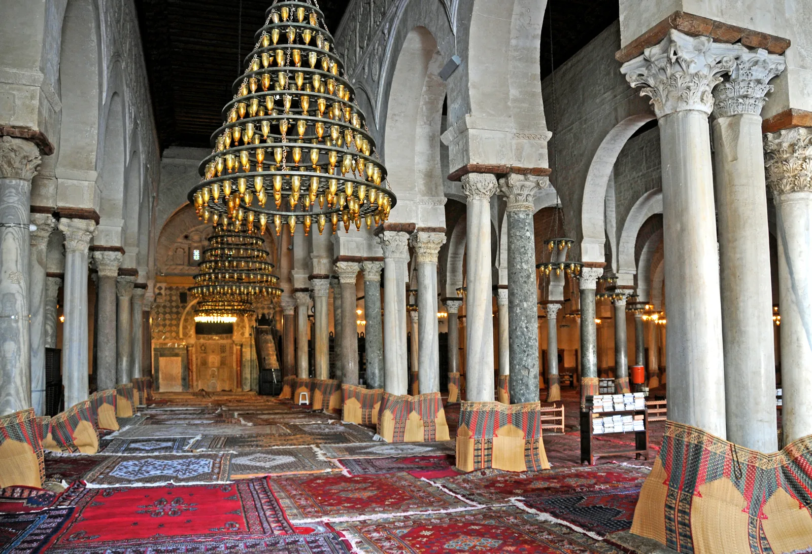
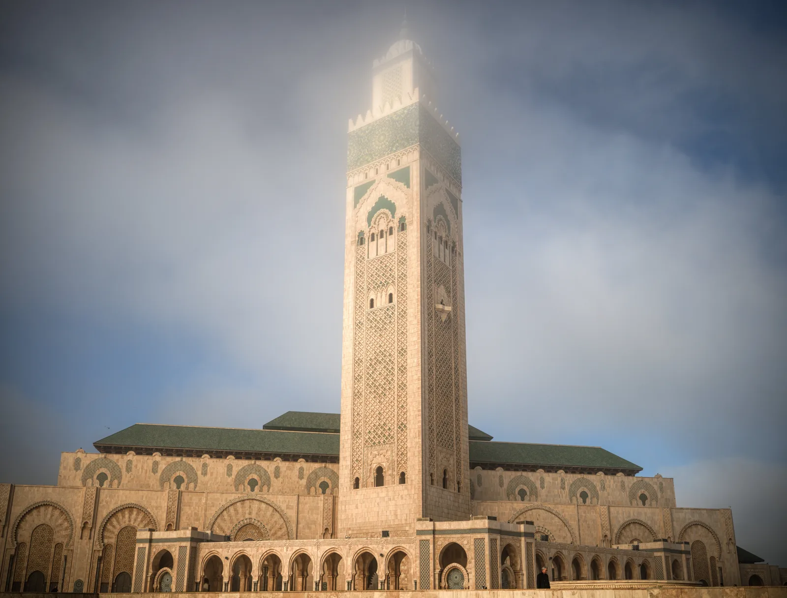

Accueil › Blog › Qu'est-ce que l'architecture islamique ? Histoire et principes fondateurs
Histoire · 7 min de lecture · 2026-01-12
Qu'est-ce que l'architecture islamique ? Histoire et principes fondateurs
On parle d'« architecture islamique » pour désigner un ensemble de traditions bâties, nées dans le monde musulman à partir du VIIe siècle, qui partagent des préoccupations communes — orienter le fidèle vers La Mecque, rassembler la communauté, orner sans représenter le vivant — tout en se transformant radicalement selon les époques et les régions.


Un point de départ : la mosquée du Prophète
La première mosquée de l'histoire est de facto la maison du Prophète Muhammad à Médine, un enclos de terre battue entouré de huttes et ombragé de palmes. Cette forme simple — une cour, un mur orienté vers la qibla, un espace couvert pour la prière — restera la matrice de la mosquée dite « hypostyle », faite de rangées de colonnes soutenant une toiture plate, qu'on retrouve des siècles plus tard à la Grande Mosquée de Kairouan ou dans la salle de prière de la mosquée-cathédrale de Cordoue.
Des influences byzantines et perses
Dès les conquêtes omeyyades puis abbassides, les bâtisseurs musulmans héritent des savoir-faire des civilisations qu'ils côtoient : la coupole et la maçonnerie de pierre de l'empire byzantin, l'art du décor et de la brique cuite de la Perse sassanide. La Masjid al-Haram de La Mecque et la mosquée du Prophète à Médine ne cesseront d'ailleurs de s'agrandir au fil des dynasties, additionnant portiques, coupoles et minarets sans jamais renier leur fonction d'origine : entourer un lieu sacré.
L'apogée ottomane : la coupole comme signature
À partir du XVe siècle, les architectes ottomans — Sinan en tête — perfectionnent l'art de la grande coupole centrale portée par des demi-coupoles en cascade, une prouesse structurelle directement inspirée de Sainte-Sophie. La Mosquée bleue et la mosquée Süleymaniye d'Istanbul illustrent cet équilibre entre monumentalité extérieure et intimité lumineuse intérieure, carrelée de céramiques d'Iznik.
Le monde persan et moghol : le règne du décor
En Iran et en Asie du Sud, l'accent se déplace vers la parure : céramiques polychromes, muqarnas sculptés, vitraux colorés. La mosquée Cheikh Lotfollah d'Ispahan ou la mosquée Nasir al-Mulk de Chiraz, surnommée « mosquée rose », transforment l'architecture en expérience presque picturale, où la lumière filtrée par le verre teinté devient un matériau de construction à part entière.
Une architecture toujours vivante
Loin d'être figée dans le passé, l'architecture islamique continue de s'inventer : la mosquée Hassan II de Casablanca marie décor traditionnel marocain et prouesses d'ingénierie contemporaine (son minaret culmine à plus de 200 mètres), tandis que la mosquée Cheikh Zayed d'Abou Dabi assume un classicisme monumental en marbre blanc, pensé pour le XXIe siècle. D'une hutte de palmes à un vaisseau de marbre climatisé, le fil conducteur reste le même : bâtir un espace qui tourne la communauté vers un même point.
À découvrir
Mosquées citées dans cet article

Mosquée Hassan II
Un géant posé sur l'Atlantique : minaret de 210 mètres, toit ouvrant et artisanat marocain à son sommet.

Mosquée bleue (Sultan Ahmed)
Six minarets, une cascade de coupoles et plus de 20 000 carreaux d'Iznik : l'icône d'Istanbul.

Mosquée Süleymaniye
Le chef-d'œuvre de Sinan dominant la Corne d'Or, dédié à Soliman le Magnifique.

Mosquée-cathédrale de Cordoue
La forêt d'arcs bicolores d'al-Andalus, chef-d'œuvre omeyyade classé à l'UNESCO.

Grande Mosquée de Kairouan
Le plus ancien grand sanctuaire de l'Occident musulman, forteresse de foi aux 400 colonnes antiques.
À propos du contenu de cette page — Ce site propose un contenu éditorial et culturel rédigé avec soin et le souci du respect des traditions religieuses concernées ; il ne constitue pas un avis théologique ou une source d'autorité religieuse. Malgré nos vérifications, des erreurs, imprécisions ou approximations peuvent subsister. Si vous en repérez une, merci de nous la signaler via la page Contact ou par e-mail à qibla.mosk@gmail.com — nous la corrigerons avec gratitude.